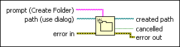

Create Folder Function
Owning Palette: Advanced File VIs and Functions
Requires: Base Development System
Creates the appropriate folder specified by path.
This function creates all folders that do not already exist in the specified path. If a file or folder already exists at the specified location, the function returns an error instead of overwriting the existing file or folder.

 Add to the block diagram Add to the block diagram |
 Find on the palette Find on the palette |